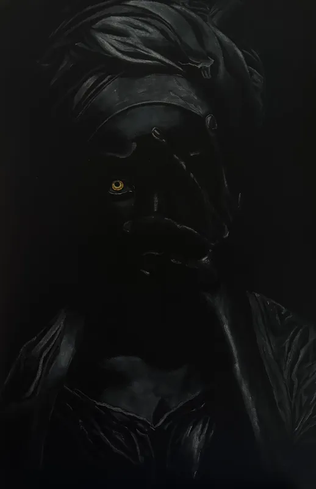
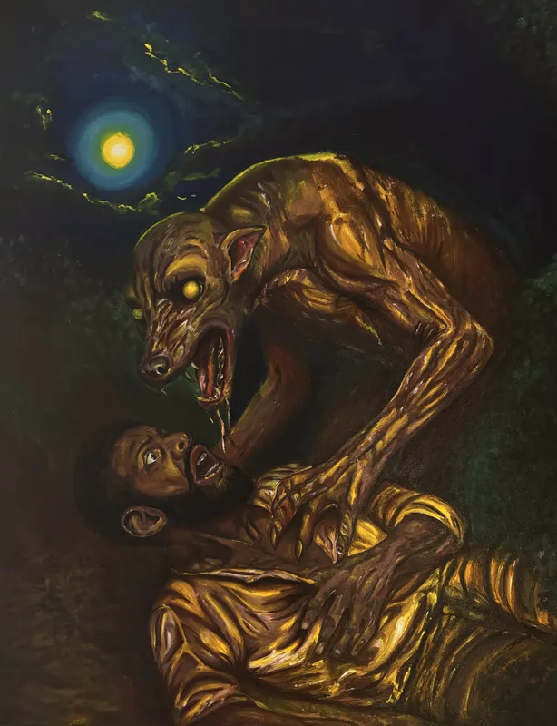
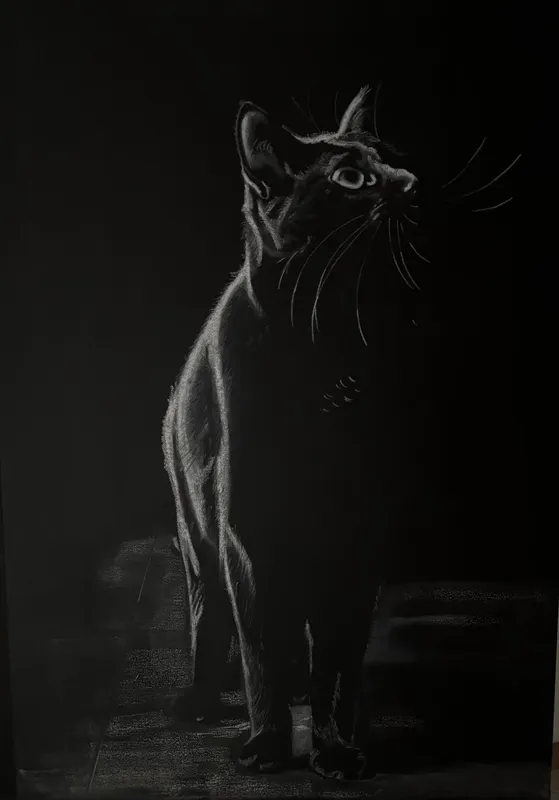
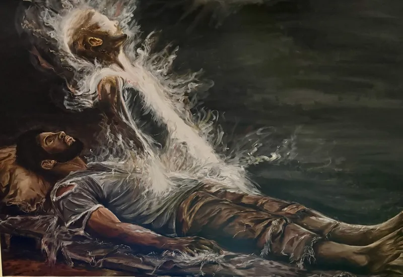
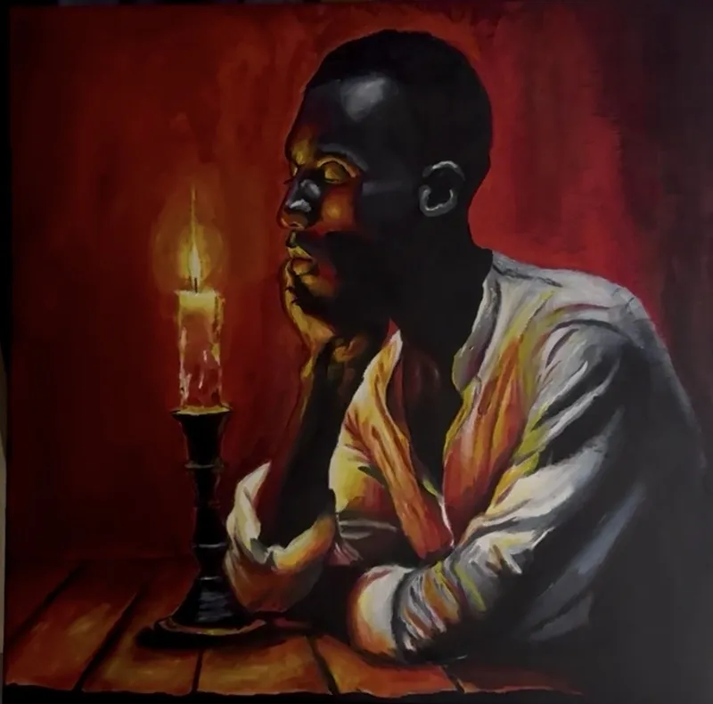

Hélio Rizkadu
PORTFÓLIO Projetos & Trabalhos
Uma coleção de trabalhos que exploram a interseção entre arte visual, narrativa e experiência imersiva.

Stepping away from the physical world
Hélio Rizkadu
Uma coleção de trabalhos que exploram a interseção entre arte visual, narrativa e experiência imersiva.
Projetos Destacados
Cada projeto representa uma jornada única através de diferentes mídias e conceitos.

Instalação Interativa
Uma instalação imersiva que explora a relação entre luz, sombra e percepção humana em ambientes digitais.

Série Ilustrada
Série de ilustrações digitais explorando temas de dualidade, transformação e renascimento através de simbolismo astronômico.

Narrativa Visual
Experiência narrativa que combina arte sequencial, design de som e interatividade para contar uma história cósmica de conexão e perda.
Estudos de Caso
Um olhar mais profundo sobre minha abordagem criativa, desde o conceito inicial até a execução final.
O Projeto Umbra nasceu de uma pergunta simples: como podemos tornar visível o invisível? A instalação explora a interação entre presença humana e projeções de luz em tempo real, criando um diálogo constante entre o espectador e o ambiente.
Utilizando sensores de profundidade e algoritmos de visão computacional, o sistema rastreia os movimentos dos visitantes e gera respostas visuais únicas que se adaptam ao comportamento coletivo do grupo. Cada sessão é única, nunca se repetindo exatamente da mesma forma.


O maior desafio foi equilibrar a complexidade técnica com a acessibilidade experiential. Queríamos que a tecnologia desaparecesse atrás da experiência, permitindo que os visitantes se concentrassem na sensação e na emoção plutôt que nos mecanismos por trás dela.
Leia o estudo completo →